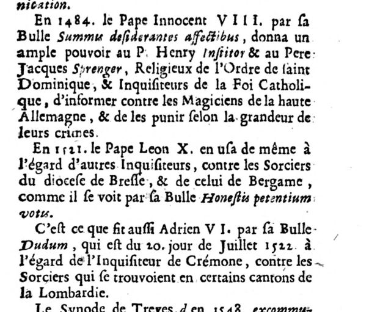

Three popes against the sorcerers (p. 139)
French: Paris, 1697 printing, p. 139, scan. Highlighted: what bears on Lecky’s note.

In 1484 Pope Innocent VIII, by his bull Summis desiderantes affectibus, gave ample power to Father Henry Institor and Father Jacob Sprenger, of the Order of St. Dominic and Inquisitors of the Catholic Faith, to proceed against the magicians of Upper Germany and to punish them according to the greatness of their crimes.
In 1521 Pope Leo X did the same for other inquisitors, against the sorcerers of the diocese of Brescia and that of Bergamo, as is seen by his bull Honestis petentium votis.
Adrian VI did likewise by his bull Dudum, dated 20 July 1522, for the Inquisitor of Cremona, against the sorcerers who were found in certain districts of Lombardy.
Original French
En 1484. le Pape Innocent VIII. par sa Bulle Summis desiderantes affectibus, donna un ample pouvoir au P. Henry Institor & au Pere Jacques Sprenger, Religieux de l’Ordre de saint Dominique, & Inquisiteurs de la Foi Catholique, d’informer contre les Magiciens de la haute Allemagne, & de les punir selon la grandeur de leurs crimes.
En 1521. le Pape Leon X. en usa de même à l’égard d’autres Inquisiteurs, contre les Sorciers du diocese de Bresse, & de celui de Bergame, comme il se voit par sa Bulle Honestis petentium votis.
C’est ce que fit aussi Adrien VI. par sa Bulle Dudum, qui est du 20. jour de Juillet 1522. à l’égard de l’Inquisiteur de Crémone, contre les Sorciers qui se trouvoient en certains cantons de la Lombardie.
Henry Institor and Jacob Sprenger are the authors of the Malleus maleficarum, which was printed with Innocent VIII’s bull as its preface. On the facing page Thiers carries the list on: the Council of Milan (1565), the French clergy at Melun (1579), and councils at Bordeaux, Mexico, Narbonne and Ferrara, all ordering magicians to be punished or excommunicated.
What Lecky took from it
Lecky’s note 5 cites “Thiers, vol. i. p. 138” together with Spina and Madden for the witch persecutions of northern Italy.
| Lecky, 1865 | Thiers, 1697 printing | |
|---|---|---|
| Italy | cited for the persecution in Italy | The bulls of Leo X (Brescia and Bergamo, 1521) and Adrian VI (Cremona, Lombardy, 1522) are the papal commissions behind the north-Italian trials. |
| A rebellion | “the severity of the inquisitors at last created an absolute rebellion” | Not here: Thiers lists bulls and councils and says nothing of resistance. Lecky’s rebellion comes from Madden. |
| Page | “vol. i. p. 138” | Pp. 139–140 in this printing; the 1741 pagination not checked. |
Editor’s notes on this page
Thiers wanted to prove that the Church had always condemned magic, so he lined up every pope and council he could find, from a Paris council of 826 (“magic and sorcery are certainly relics of paganism”) to the councils of Milan, Bordeaux, Mexico and Narbonne. In the middle of the list are the three papal bulls that launched the great witch-hunts of Germany and northern Italy. Lecky cites the page for the Italian persecutions; what it does not contain is the “absolute rebellion” against the inquisitors that Lecky mentions in the same note.
Backlinks
Every place in Rationalism in Europe that links to this page (generated automatically when the site is built).